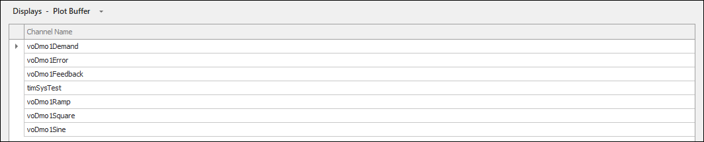

iTest User's Guide
The Plot Buffer editor is used to manage channels for the high-speed circular buffer. The buffer can be configured and selected as a data source in a Chart panel, enabling high rate data to be viewed. For more information, refer to the High-Speed Circular Buffer documentation.
To access the Plot Buffer editor in SolutionBuilder, select Displays > Plot Buffer.
The Plot Buffer editor lists the channel contents of the VXBuffer.cfg file, which is located in the $SUPPORTDIR. You can modify the channel contents of this file via the available right-click options. The maximum amount of channels the VXBuffer.cfg file can have is 1000.
 |
NOTE: | An error message will display upon save if there are duplicated channels. |
Plot Buffer Editor

Right-Click Options
| Option | Description |
| Insert Before | Launches the Channel Selection dialog, which allows you to select a channel to add. The channel is inserted before the selected channel. Only numeric channels can be selected. |
| Add to End | Launches the Channel Selection dialog, which allows you to select a channel to add. The channel is added to the end of the list. Only numeric channels can be selected. |
| Delete | Removes the selected channel from the list. |
| Cut | Removes the selected channel from the list and copies it to the clipboard. |
| Copy | Copies the selected channel. |
| Paste | Pastes the copied channel. |
| Undo | Undoes the last action. |
| Redo | Redoes the last undone action. |